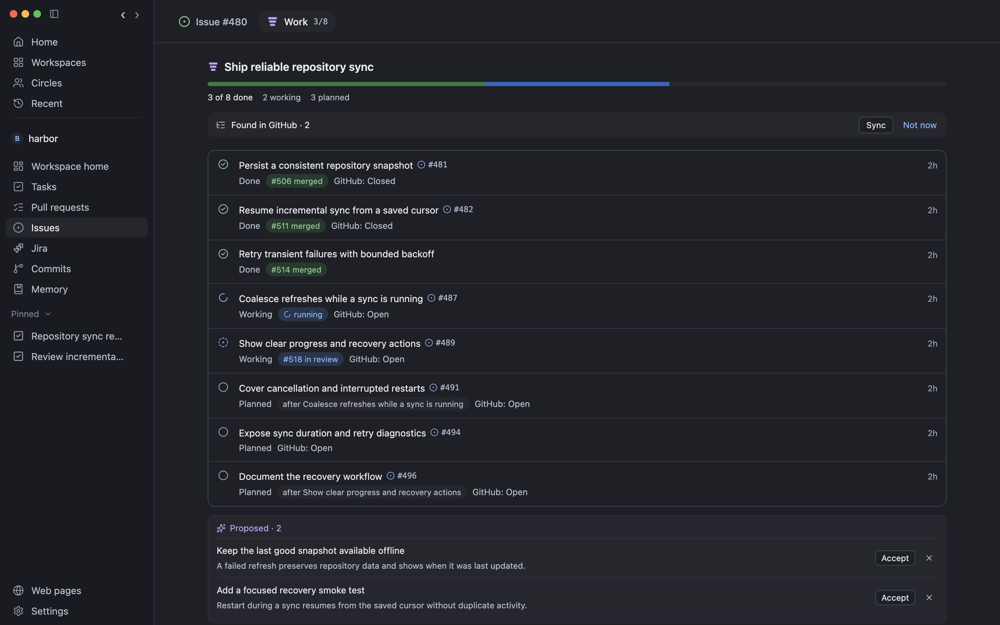

A conversation that builds.
Work with Codex or Claude in a separate local worktree. Steer the task, handle approvals, and inspect the result beside the conversation.
Development guide →YOUR REPOSITORIES. YOUR AGENTS. YOUR CALL.
A focused home for GitHub work. Understand the change,
work with coding agents, and move forward with confidence.
Built for macOS Open source Pre-1.0

Give an agent a task, follow the conversation, and inspect its code and tests in WorkBench. Keep the next decision in your hands.
Read the feature guide →FROM CONTEXT TO CONFIDENCE
Keep the repository, the conversation, and the work connected.
Work with Codex or Claude in a separate local worktree. Steer the task, handle approvals, and inspect the result beside the conversation.
Development guide →Understand the intent, follow each commit, and investigate private findings before choosing what to publish.
Review guide →Choose the source and destination, review a commit range, and follow conflict resolution before delivering the branch.
Cherry-pick guide →Clarify the outcome, learn what you need, and turn a broad objective into useful next steps with evidence of completion.
Goals guide →Bring related work into one view. Follow planned items, active attempts, dependencies, and completed outcomes.
Epics guide →MAKE PROGRESS VISIBLE
Epics keep the work behind a larger change together. See what is done, what is moving, and what is waiting for something else.

GET TO KNOW BYTEQUAY
OPEN SOURCE. STILL TAKING SHAPE.
ByteQuay is under active development. Try a release, build from source, or help shape what comes next.